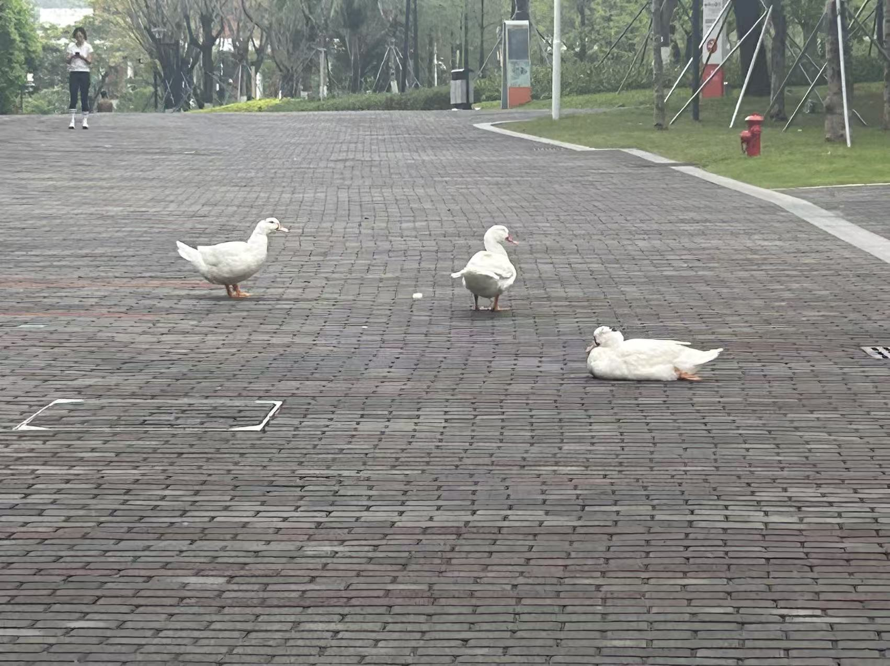
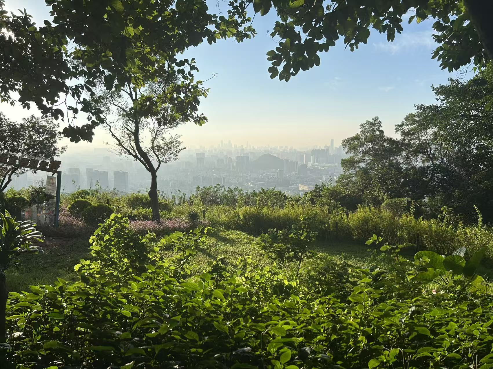
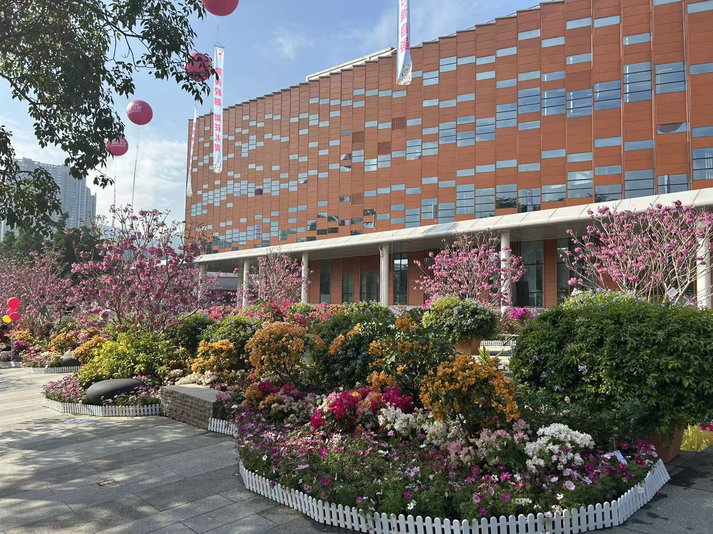
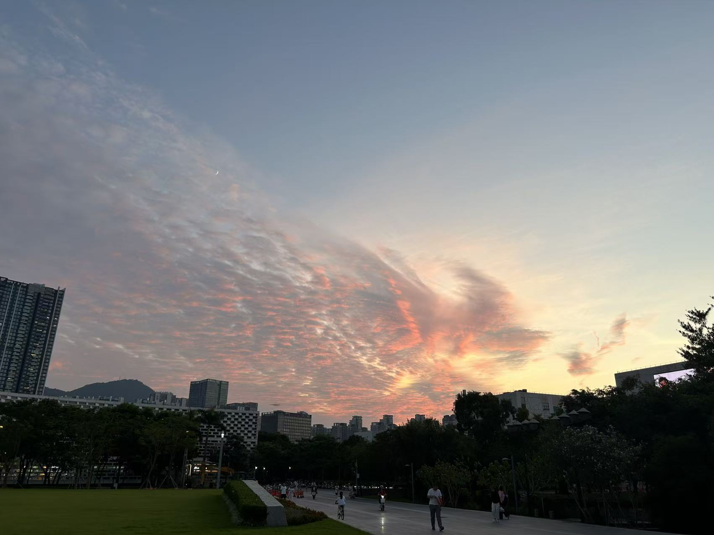
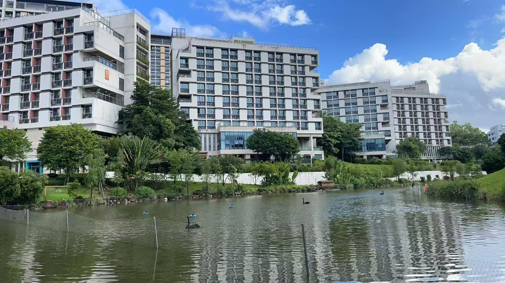

春华校园的自然风光，是藏在四季里的温柔诗篇。春日里，樱花大道的粉白花瓣随风轻舞，落在青石板路上，像是给校园铺了一层浪漫的绒毯；湖畔的垂柳抽出嫩黄的新芽，枝条垂在水面，漾开一圈圈细碎的涟漪，偶尔有白鹭掠过湖面，惊起一片波光粼粼。夏日的校园被浓绿包裹，香樟树的枝叶遮天蔽日，在教学楼前投下大片清凉的阴影，蝉鸣声声里，是少年们奔跑的身影；荷花池里的粉荷次第绽放，清香随风飘散，沁人心脾。秋日的校园被金红浸染，银杏大道的落叶铺满小径，踩上去沙沙作响，像是时光在轻声吟唱；柿子树挂满了红彤彤的果实，像是一个个小灯笼，点亮了整个校园。冬日的校园银装素裹，白雪覆盖了屋顶、操场和树梢，整个世界变得纯净而安静，唯有松柏依旧苍翠，守护着校园的每一寸土地。
清晨的校园，是被阳光唤醒的温柔。第一缕阳光越过教学楼的屋顶，洒在操场上，给跑道镀上一层金边；图书馆前的草坪上，露珠在草叶上滚动，折射出细碎的光芒；早起的学子们捧着书本，在湖畔的长椅上轻声诵读，声音伴着鸟鸣，成为校园里最动听的旋律。傍晚的校园，是被晚霞晕染的浪漫。夕阳把天空染成橘红色，映在湖面，像是打翻了颜料盘；操场上，是同学们挥洒汗水的身影，篮球撞击地面的声音、加油呐喊的声音，交织成青春的乐章；食堂飘出饭菜的香气，温暖着每一个晚归的学子。春华校园的每一处风景，都藏着青春的故事，每一缕风，都带着成长的温度。




